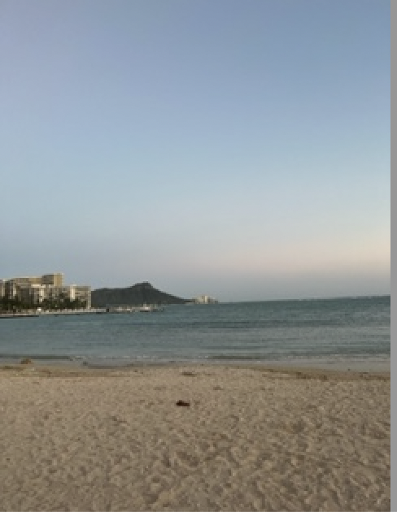
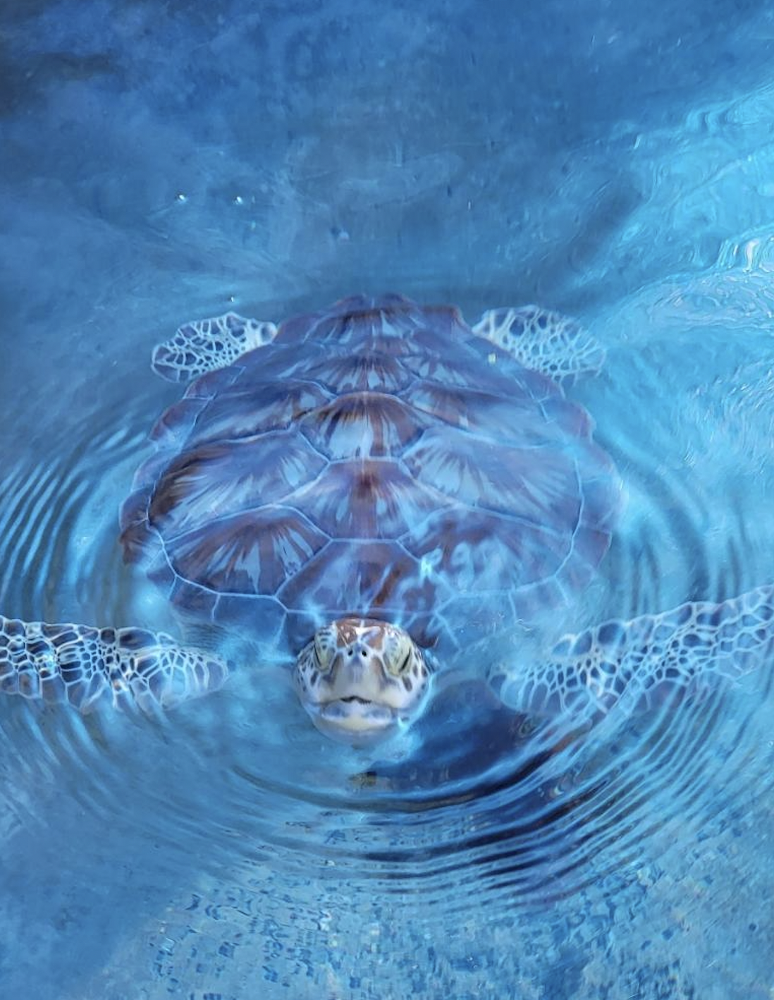
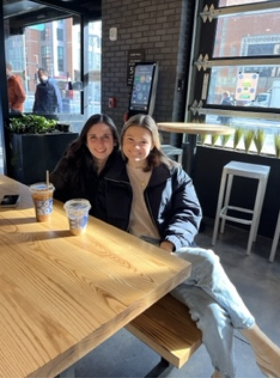
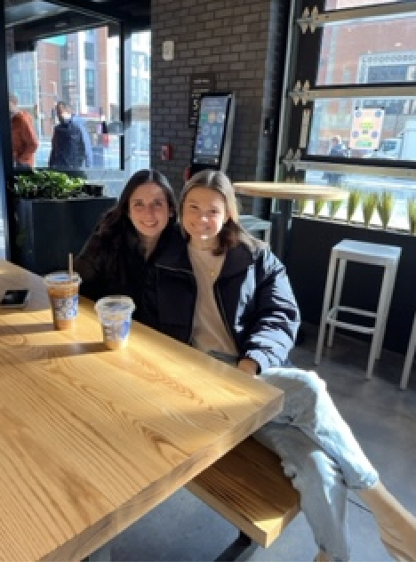

My name is Maria Larracuente and I am a 2nd year student at Northeastern University. I am studying psychology and criminal justice and plan to attend law school. In July I am going to go on my first co-op (internship) at the US Attorneys Office in New York. I am super excited for this opporunity and I think it will give me great insight into the federal legal system. I plan to practice child advocacy law in the future.
Now a little bit more about me! I have been coaching gymnastics for the past 3 years and before that I did gymnastics for 10 years. This sport is always somehting I will hold dear to my heart. I love the excitment when a student gets a new skill and how I have been able to watch students grow and succeed for the past few years. I love working with kids and this is why I want my focus in law to be advocating for kids. I also love the beach! Whenever I plan a vacation, I always try to go to the beach as I love the ocean. A fun fact about me is that my favorite animal is a turtle! This past spring break, I went to Hawaii for the first time and it was an amazing experience. I absolutely love traveling and being able to explore new places. For the month of may I am taking a trip to Norway to work on a farm and I cannot wait to see their culture and I know it is going to be a great experince! In my free time I love being outdoors and spending time with friends. I am also a coffee fanatic! I love trying coffee and new places and am a big fan of the coffee shop asthetic. The last thing you should know about me is that I am the proud dog owner of a 12 year old Golden Retriever. His name is Buddy and he is the best dog anyone could ever ask for. Despite his old age he still finds plenty of ways to make trouble and is still very active.
This website stands on the line between my professional and personal writing. I have included works that I feel have demonstrated my more quirky creative side, but I also chose to include my Resume and some works in areas that I have studied. I am particularily proud of my research paper on Developmental Crime Prevention! You will notice that a lot of these works are under the category of: Digital Writing Works. This was the course that led to a lot of these pieces and for me it was the course that pushed me out of my writing comfort zone. Prior to this course I was very much an academic research writer only, and I never really got to explore my creative writing side. After this course I got in touch with that side of myself and plan to write more creative pieces, in addition to my academic research works. The fact that I was able to make this website is something I never could have imagined doing!
Below are some photos capturing my life and travels!
  
